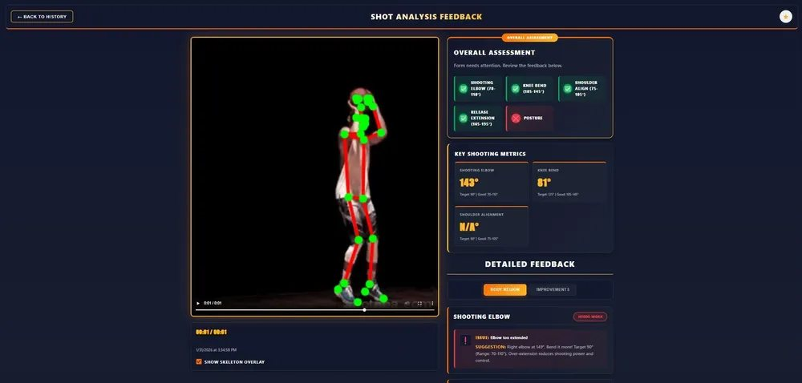
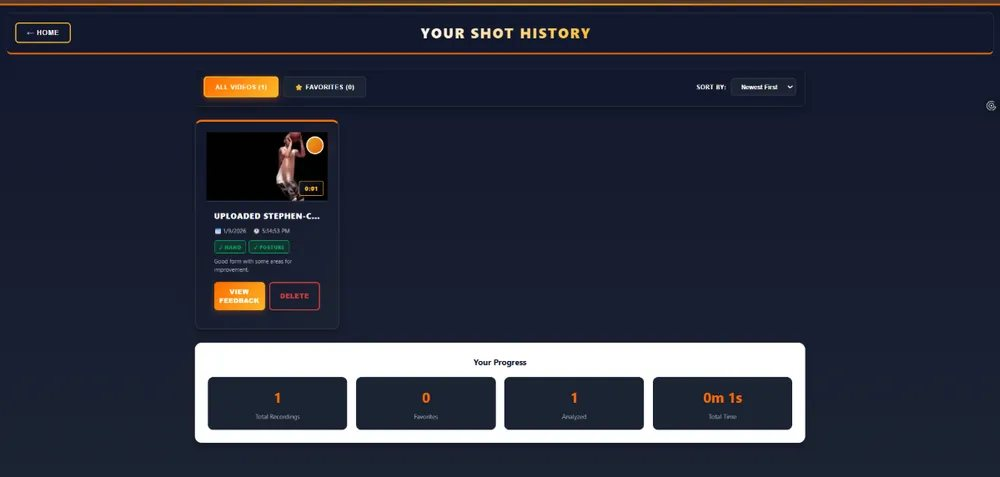
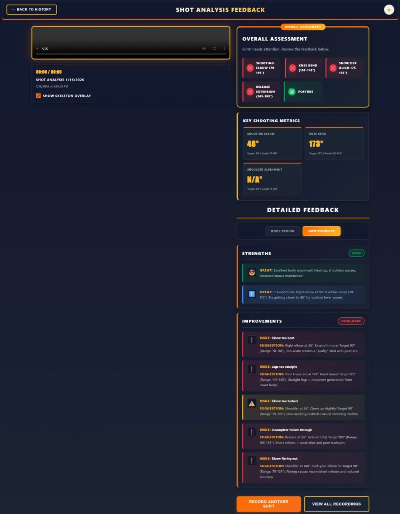

~ / projects / basketball-coach
Basketball shot coaching app
A web app that gives beginner basketball players feedback on their shooting form, using pose estimation and voice cues.
- Year
- 2025/26
- Duration
- 10 weeks
- Team
- 5 students
- Platform
- Web app



The problem
Beginners rarely have a coach watching, so they often don’t know what’s wrong with their shot. Our user research confirmed that.
How it works
The player records a shot with the camera. MediaPipe Pose tracks the body, and the app checks the shooting elbow, knee bend, shoulder alignment, release extension and posture against target ranges. Then it explains what went well and what to fix, with voice guidance and visual feedback.
A history page keeps past shots, with favourites, sorting and progress stats, so players can see whether they’re improving.
Testing
We tested the prototype with users and watched how they handled camera positioning, the feedback, the history and the filters. That led to concrete improvements: hands-free recording, clearer favourites and more consistent feedback.